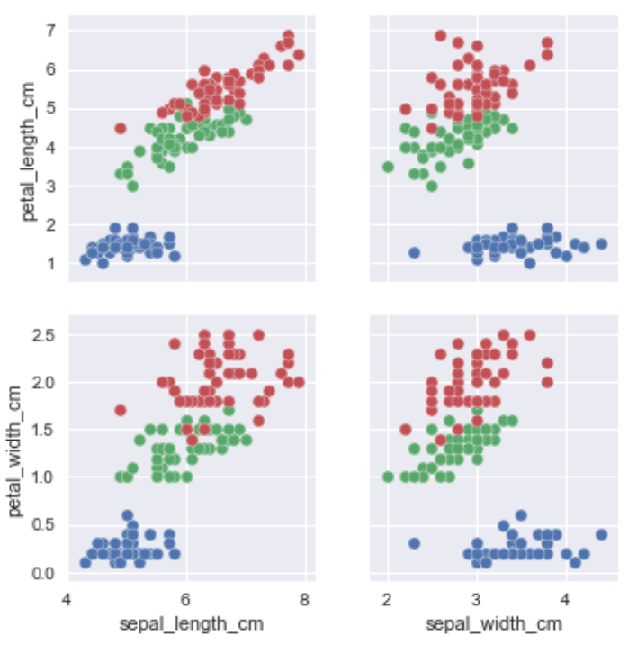

MY WORK
What I've done

Research Works
Extracting feartures of synthesizable compounds from materials database.

Natural Language Processing
Phasellus eget enim eu lectus faucibus vestibulum. Suspendisse sodales pellentesque elementum.

Classification Models
Built classification models for iris data as practice of ML.